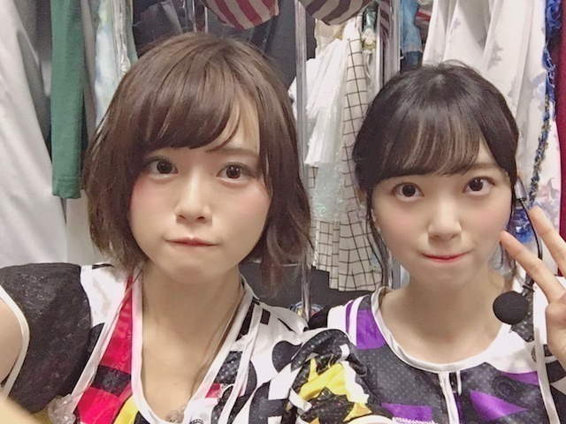

2018/0903Mon不思議だね。

名古屋ドーム2日間のブログを途中まで書いていたので
アップさせていただきます。
来てくださった皆さん
ありがとうございました。
実は、私の体調がライブの3日前から優れず
病院に行き点滴と注射をし何とかステージに立たせていただけることができました
元々扁桃腺が腫れて高熱が出やすかったのもありますが、
本番前に体調を崩してしまった自分が許せず悔しさもあり
苦しくて...
ずっとずっと名古屋ドームに立てる日を楽しみにしていたのでこのまま出られないのは本当に悔しいって思って無理を言い出させていただきました。
もっと身体を強くしなきゃって改めて思いました。
でも、こんなに暑い中
並んで来てくださって
たのしみに待っていてくださってる方がいて
だから私もより
皆さんに会いたい、会いに行かないといけない
っていう強い気持ちが自分の中にずっとあって...
声援やタオルやサイリウムやうちわ
たくさん見えています
100%のパフォーマンスができなくて
ごめんなさい。でも、心の底から
楽しかったです...本当に。
あの景色を見ることができてよかったです
本当に、ありがとうございます
仙台公演は医者とスタッフさんとの話し合いで
出演できませんでしたが会場でメンバーと
ファンの皆さんが私の名前でコールアンドレスポンスをしてくれたと聞いて、嬉しかったです。
またライブできたらいいな...
楽しみにしていてくださった方々
スタッフさん メンバー
ご心配、ご迷惑をおかけして申し訳ありませんでした。
名古屋ドームの初日に実はジコチュープロデュースで"空気感"を披露させていただきました
モニターの写真で少しでも
来られなかった方にお伝えできれば...
サブ地元。名古屋で、
しかもこのほんわかメンバーで披露できて
リハも含め凄く楽しくて
終わったあとにみんなが楽しかったって
言ってくれたのが何よりも嬉しかったです
実はかなり演出にこだわりました

左から楓、私、桃子、れな
まず洋服
頭先から足先まで私が私物を取り入れつつ
メンバーをコーディネートしました
楓はスタイルの良さを生かして
白のショートパンツに
お腹チラ見せで"ヘルシー元気女子"
くすみブルーが
大人っぽくて似合ってました
私はオフショルの淡いピンクワンピースで
メイクもアイシャドウからチークリップまで
ar風ガーリーで"にこにこ系女子"
桃子は上品な感じとちょっと個性的な感じを
出したくて赤を基調にしたお利口スタイルに
しました！本人が着たいって言った服に。
黒髪に赤が華やかでした
"お母さんに紹介したい癒し系女子"
れなはモノトーンのイメージがあるし
現役大学生だから白Tで抜け感を出しつつ
帽子ベルトブーツでいい女感をだして
"何でもできる知的女子"
私服かなっていうくらい着こなしてくれました
みんなの意見も取り入れながら
似合いそうなスタイリングをしてみました〜

あとはこの1人ずつのパーソナルデータ。
私が実際にインタビューをして
スタッフさんに作っていただきました
ありがとうございます
恋愛シュミレーションゲームみたいにしたくて
1人1人違う雰囲気の女の子像で
作らせていただきました

乃木恋リアルも久しぶりで緊張したなぁ。。笑
シチュエーションも
名駅前待ち合わせ(名古屋といえばね！)
付き合って2年(空気感の歌詞より)
と、少し名古屋要素と歌詞の要素を
いれてみました
空気感の歌詞、甘くて好きです

ふわふわとした私のすきな世界観で
本当にジコチューなプロデュースでしたが
幸せでした
ありがとうございました
では。
2018/09/03 14:24
コメント(749)
ゆっくりいこうぜ
未央奈！
名古屋はありがとう。
乃木恋リアルも空気感も本当に楽しめました。
仙台では、ちゃんとコールアンドレスポンズやったよ！
回復してきたみたいだね。
良かった。
でも焦ったらまた体調崩すからわゆっくり着実にね！
名古屋はありがとう。
乃木恋リアルも空気感も本当に楽しめました。
仙台では、ちゃんとコールアンドレスポンズやったよ！
回復してきたみたいだね。
良かった。
でも焦ったらまた体調崩すからわゆっくり着実にね！
掘未央奈様、名古屋でのコンサート報告ありがとうございます。私も参加しましたので「空気感」楽しんで見させて貰いました。でもそんなに体調悪かったと知った時は驚きました。 どうぞお大事に、１日も早い回復を願っております。
名古屋お疲れ様！！体調ゆっくり治してね！！
あ！オヤシラ～ズだ！！
何となく･･･
何となく･･･(笑)
点滴と注射･･･
ｺﾄﾊﾞﾆﾅﾗﾅｲ!
ﾅﾝﾄﾅｸ
フィンランド人？
ｺﾄ･･･ｲﾔ!ﾅｾﾞﾆ?
名駅前
あ～恒例スポットってや～つ
ですね。
渋谷しかり、池袋しかり、･･･しかり、･･･しかり、
(思いついてない。笑)
名古屋ドームでのライブ。
おめでとうございます。
ではまた。
何となく･･･
何となく･･･(笑)
点滴と注射･･･
ｺﾄﾊﾞﾆﾅﾗﾅｲ!
ﾅﾝﾄﾅｸ
フィンランド人？
ｺﾄ･･･ｲﾔ!ﾅｾﾞﾆ?
名駅前
あ～恒例スポットってや～つ
ですね。
渋谷しかり、池袋しかり、･･･しかり、･･･しかり、
(思いついてない。笑)
名古屋ドームでのライブ。
おめでとうございます。
ではまた。
未央奈 無理しすぎないようにね(^^)
応援しとるよー
応援しとるよー
早く治してなー
お疲れ様です。名古屋ドーム一日に行きました。良かったです。ありがとう。頑張ってね。
ブログ更新ありがとう！！！！
次の握手会、未央奈の元気な顔を見られるから楽しみにしてます！！！！
次の握手会、未央奈の元気な顔を見られるから楽しみにしてます！！！！
未央奈お疲れ様！
体調が悪い中、ブログ更新してくれてありがとう
堀ちゃんのコーディネート紹介、
ファッション誌の紙面みたいで面白いな
堀ちゃんのコーディネート紹介、
ファッション誌の紙面みたいで面白いな
ナゴヤドーム本当によかったよ
ゆっくり休んで、しっかり治してね
待ってるよ(^^)
ゆっくり休んで、しっかり治してね
待ってるよ(^^)
ブログ更新ありがとー！
堀さん名古屋体調悪かったのですね！ 出てくれてありがとうございます〜 可愛すぎてやっぱ堀さんっていいなって思いました！自慢の推しです！
仙台のライブは残念でしたが、またザンビ等色々頑張ってくださいね！応援してます！観に行きますね〜！
体調には気をつけて頑張ってください！来年のライブで堀さんに会えるの楽しみにしてます〜
堀さん名古屋体調悪かったのですね！ 出てくれてありがとうございます〜 可愛すぎてやっぱ堀さんっていいなって思いました！自慢の推しです！
仙台のライブは残念でしたが、またザンビ等色々頑張ってくださいね！応援してます！観に行きますね〜！
体調には気をつけて頑張ってください！来年のライブで堀さんに会えるの楽しみにしてます〜
脇の体操ワンツースリー
早く元気になって下さいね！
名古屋良かったですよ！
名古屋良かったですよ！
ナゴヤドームの乃木恋リアル本当に盛り上がって凄く良かったです。
また、いつかライブツアーでまた未央奈ちゃんの元気な姿楽しみにしてます。疲れが溜まると、病は出てくるから休養はしっかりしてね。
空気感の時、バルーン離すのかなって思ってました。本当にふわふわ感の歌で良かったです。
体を大切にね。
また、いつかライブツアーでまた未央奈ちゃんの元気な姿楽しみにしてます。疲れが溜まると、病は出てくるから休養はしっかりしてね。
空気感の時、バルーン離すのかなって思ってました。本当にふわふわ感の歌で良かったです。
体を大切にね。
更新ありがとう〜
扁桃腺の調子はどう？
少しは良くなったかな、堀ちゃんのためならいつまでも待つので気にせずゆっくり休んでね〜
名古屋お疲れ様〜
熱辛かったでしょ、ライブ中ぶっ倒れなくて良かったまあ僕は行けませんでしたけどね、空気感披露したんですね、私物の衣装可愛いですねこだわりが凄いですね〜 意識高い系女子ですね堀ちゃんは笑
恋愛シミュレーションゲームみたいな演出にしたんですね今までにない演出で可愛くてとても( ・∀・) ｲｲﾈ！
仙台ライブ久保ちゃん復活したみたいですね♪
何事もなく復活出来て良かったです！
マックの桃のシェイク飲みました？
めっちゃ美味しかった、今旬だから美味しいですよね〜
コメ読みお疲れ様で〜す★
またね〜
扁桃腺の調子はどう？
少しは良くなったかな、堀ちゃんのためならいつまでも待つので気にせずゆっくり休んでね〜
名古屋お疲れ様〜
熱辛かったでしょ、ライブ中ぶっ倒れなくて良かったまあ僕は行けませんでしたけどね、空気感披露したんですね、私物の衣装可愛いですねこだわりが凄いですね〜 意識高い系女子ですね堀ちゃんは笑
恋愛シミュレーションゲームみたいな演出にしたんですね今までにない演出で可愛くてとても( ・∀・) ｲｲﾈ！
仙台ライブ久保ちゃん復活したみたいですね♪
何事もなく復活出来て良かったです！
マックの桃のシェイク飲みました？
めっちゃ美味しかった、今旬だから美味しいですよね〜
コメ読みお疲れ様で〜す★
またね〜
こんばんは。ブログ更新ありがとうございます。
私も子供の頃から、あまり頑丈な方ではなく、風邪や頭痛、腹痛をしょっちゅう起こしていました。自己管理も仕事のうちと言われますが、けがや病気はなる時はなってしまうもの。あんまり気にせず、次のお仕事で挽回するチャンスはやってきます。
夏の全ツが終わったので、少しお休み貰えるのかな？何もしない1日を作れそうですが？
ではまた。
私も子供の頃から、あまり頑丈な方ではなく、風邪や頭痛、腹痛をしょっちゅう起こしていました。自己管理も仕事のうちと言われますが、けがや病気はなる時はなってしまうもの。あんまり気にせず、次のお仕事で挽回するチャンスはやってきます。
夏の全ツが終わったので、少しお休み貰えるのかな？何もしない1日を作れそうですが？
ではまた。
生まれ変わるなら
フィンランド人なんだ？
フィンランド人は未央奈に生まれ
変わりたいと思ってると思うよ～？


フィンランド人なんだ？
フィンランド人は未央奈に生まれ
変わりたいと思ってると思うよ～？
堀ちゃんこんばんは。
名古屋公演に行きましたがめっちゃ楽しかったです！堀ちゃんが不調なのに、全然休んでも仕方ない状態なのに頑張ってくれてた事に感謝です。でも体調不良は誰しも起こりうる事だし無理はしないでね、謝る事でも無いよ。でも今回の事で堀ちゃんのファンを大事している気持ちが自分にはとても伝わってきたし一層好きになりました。
この前のレコメンで絢音ちゃんが頑張ってくれてましたね。多分得意じゃない事なんだと思うけど、堀ちゃんのために一生懸命にやってるなぁと思って聴いてました。本当にいい相棒ですね、なんかその関係性にほっこりしました。無理しないでまた元気になって楽しい放送してくれるのを待ってます！
名古屋公演に行きましたがめっちゃ楽しかったです！堀ちゃんが不調なのに、全然休んでも仕方ない状態なのに頑張ってくれてた事に感謝です。でも体調不良は誰しも起こりうる事だし無理はしないでね、謝る事でも無いよ。でも今回の事で堀ちゃんのファンを大事している気持ちが自分にはとても伝わってきたし一層好きになりました。
この前のレコメンで絢音ちゃんが頑張ってくれてましたね。多分得意じゃない事なんだと思うけど、堀ちゃんのために一生懸命にやってるなぁと思って聴いてました。本当にいい相棒ですね、なんかその関係性にほっこりしました。無理しないでまた元気になって楽しい放送してくれるのを待ってます！
みおちゃん全国ツアーお疲れ様！
宮城で全力で未央奈コールしたったで！
名古屋は頑張って出てくれたんだね！
具合はどうかな？あんまり無理せずに！
宮城で全力で未央奈コールしたったで！
名古屋は頑張って出てくれたんだね！
具合はどうかな？あんまり無理せずに！
ゆっくりでいいから
しっかり治してね！！
しっかり治してね！！
未央奈ブログ更新ありがとう！
名古屋公演本当に楽しかった！
今までで一番「未央奈！」って叫んだ気がする(笑)
未央奈のプロデュース4人皆可愛かった！
また元気になって戻ってきてね！
名古屋公演本当に楽しかった！
今までで一番「未央奈！」って叫んだ気がする(笑)
未央奈のプロデュース4人皆可愛かった！
また元気になって戻ってきてね！
未央奈こんばんは。
体調よくなってきたようで何よりです。
未央奈へのコール＆レスポンスは宮城スタジアムが一番熱い瞬間だと僕は感じました。
声がかれるまで叫びました！
身体が弱い堀ちゃんはお休みしてしまうこともありますが、今回はとっても悔しかったと思います。
次のライブで300%のパフォーマンスを期待しています。
今はしっかり養生して、美味しいものをたべて元気なってください。これからも応援しています。
ではごきげんよう
体調よくなってきたようで何よりです。
未央奈へのコール＆レスポンスは宮城スタジアムが一番熱い瞬間だと僕は感じました。
声がかれるまで叫びました！
身体が弱い堀ちゃんはお休みしてしまうこともありますが、今回はとっても悔しかったと思います。
次のライブで300%のパフォーマンスを期待しています。
今はしっかり養生して、美味しいものをたべて元気なってください。これからも応援しています。
ではごきげんよう
仙台でもみおなタオルたくさん掲げたよー！
他にも上げてる人いた！想いよ届けっ！
またみおちゃんの元気な姿を見られればそれで良いです！
他にも上げてる人いた！想いよ届けっ！
またみおちゃんの元気な姿を見られればそれで良いです！
体調どう？
くれぐれも無理はしないようにね。
お大事に！
くれぐれも無理はしないようにね。
お大事に！
体をつよくするにスッポンをお勧めします。
一般的にスッポンは男性向けの食品だと思われていますが、必須アミノ酸がバランスよく含まれていて男女問わず体によく、さらに女性向けの機能として肌が若返ることで、これは食べてから一晩たてば誰でも実感できます。
味は…なので粉タイプの物を水で流し込む、あるいはカプセルタイプの物が良いと思います。
スッポンはどこでも買えますが、せっかくなので地元岐阜でさらに温泉を使って育てたスッポンをお勧めします。
温泉なので余計な薬品等つかっておらず、温泉のパワーも吸収しています。
URLにリンクを張っておきました。
ここまで書いてきてあまりに宣伝っぽくなってしまいましたが、私は各務原であちらは高山なので関係者ではありません。
もう一つ元気になるためには、もっともっとジコチュウになることだと思います。他人の顔色を見ず、自分のハートに従うことが大切だと思います。
一般的にスッポンは男性向けの食品だと思われていますが、必須アミノ酸がバランスよく含まれていて男女問わず体によく、さらに女性向けの機能として肌が若返ることで、これは食べてから一晩たてば誰でも実感できます。
味は…なので粉タイプの物を水で流し込む、あるいはカプセルタイプの物が良いと思います。
スッポンはどこでも買えますが、せっかくなので地元岐阜でさらに温泉を使って育てたスッポンをお勧めします。
温泉なので余計な薬品等つかっておらず、温泉のパワーも吸収しています。
URLにリンクを張っておきました。
ここまで書いてきてあまりに宣伝っぽくなってしまいましたが、私は各務原であちらは高山なので関係者ではありません。
もう一つ元気になるためには、もっともっとジコチュウになることだと思います。他人の顔色を見ず、自分のハートに従うことが大切だと思います。
きつい中ブログありがとう‼︎
体も気をつけながらライブ頑張ってね
体も気をつけながらライブ頑張ってね
名古屋の初日行きました。
みおな体調良くなかったんだ。
名古屋は地元といってもいいくらいだし、自分が演出考えたとなれば、簡単に欠席なんか出来るわけないよね。
これは気力と意地だったと思う。
暑い中大変だったと思うけど、2日間よく乗り切ったね。お疲れ様でした。
名古屋ドームでのサイリウムの景色は東京ドームに近い雰囲気があって、観客の自分でも壮観で感動しました。
ハルジオンが咲く頃の景色も良かった。この曲以外とレアじゃないかな？
ライブの盛り上がりもすごかったし、ほんと楽しかったです。
今週末は千葉全握もあるし、早くよくなってね！
みおな体調良くなかったんだ。
名古屋は地元といってもいいくらいだし、自分が演出考えたとなれば、簡単に欠席なんか出来るわけないよね。
これは気力と意地だったと思う。
暑い中大変だったと思うけど、2日間よく乗り切ったね。お疲れ様でした。
名古屋ドームでのサイリウムの景色は東京ドームに近い雰囲気があって、観客の自分でも壮観で感動しました。
ハルジオンが咲く頃の景色も良かった。この曲以外とレアじゃないかな？
ライブの盛り上がりもすごかったし、ほんと楽しかったです。
今週末は千葉全握もあるし、早くよくなってね！
早く治して元気な姿を観れるのを楽しみにしています！
ジコチュープロデュース見たかったです！
ジコチュープロデュース見たかったです！
名古屋公演行ったよ
本当に楽しい2日間をありがとう！
名古屋公演3日前から体調不良だったのにファンのためにって頑張ってくれた未央奈が本当に大好きですごく尊敬します
今は治すことに専念して、ゆっくり休んでまた元気な姿を見せてね
本当に楽しい2日間をありがとう！
名古屋公演3日前から体調不良だったのにファンのためにって頑張ってくれた未央奈が本当に大好きですごく尊敬します
今は治すことに専念して、ゆっくり休んでまた元気な姿を見せてね
名古屋2日間いったよ！未央奈のために堀うちわ作って、振ってたよ笑 女性席と見切れでね笑笑 未央奈ちょっとは元気になってくれてよかった！扁桃腺なったことないからわからないけど、辛いよね、、ただ言えることは、未央奈は何も悪くないよ！いつもファンのこと考えてるの知ってるし、ブログも上げてくれて嬉しい泣
未央奈推して4年目で、未央奈がいるからここまで頑張ってこれたんだよ！未央奈のおかげで学校もいけるようになったし！
本当にありがとね！未央奈が元気になってくれたら嬉しい！
ゆっくり休んでね！あとレコメン3連チャンで読まれてる笑 女心のコーナー！
ももんが
未央奈推して4年目で、未央奈がいるからここまで頑張ってこれたんだよ！未央奈のおかげで学校もいけるようになったし！
本当にありがとね！未央奈が元気になってくれたら嬉しい！
ゆっくり休んでね！あとレコメン3連チャンで読まれてる笑 女心のコーナー！
ももんが
ナゴヤドーム2日目に行きました。
地元出身の堀ちゃんとでんちゃんを見る目はいつも特別。
2人の姿がナゴドで見られてほんと嬉しかった。
だけど堀ちゃんがそこまで体調が悪かったとは思わなかった。
もちろんレコメンを欠席、らじらーでも熱が出た話をしてたので心配はしたけど、元気にステージに立ってたようにみえたので安心してた。
体調が悪いのに少しも感じさせないようパフォーマンスしてたってこと、それはプロの仕事をしたってことじゃないかな。
その悔しさは来年に。
特に仙台。今年の分まで弾けないとね。
地元出身の堀ちゃんとでんちゃんを見る目はいつも特別。
2人の姿がナゴドで見られてほんと嬉しかった。
だけど堀ちゃんがそこまで体調が悪かったとは思わなかった。
もちろんレコメンを欠席、らじらーでも熱が出た話をしてたので心配はしたけど、元気にステージに立ってたようにみえたので安心してた。
体調が悪いのに少しも感じさせないようパフォーマンスしてたってこと、それはプロの仕事をしたってことじゃないかな。
その悔しさは来年に。
特に仙台。今年の分まで弾けないとね。
未央奈ブログ更新ありがとう
体調の方はいかがですか？
ゆっくり休んでね〜
全ツ宮城二日間参加しましたよ！
コールアンドレスポンス楽しかったよ ♂️
未央奈！大好き！待ってる！
届いてるといいなぁ
二日間雨だったので風邪引いちゃった笑笑
次のブログも楽しみにしてます！
ばいばーい
体調の方はいかがですか？
ゆっくり休んでね〜
全ツ宮城二日間参加しましたよ！
コールアンドレスポンス楽しかったよ ♂️
未央奈！大好き！待ってる！
届いてるといいなぁ
二日間雨だったので風邪引いちゃった笑笑
次のブログも楽しみにしてます！
ばいばーい
堀ちゃん、ブログありがとうございます！
少し回復したようで安心しました。
仙台公演はいくちゃんの提案でコールアンドレスポンスしました！
ゆっくり休んで完治するまでは無理しないでくださいね。
少し回復したようで安心しました。
仙台公演はいくちゃんの提案でコールアンドレスポンスしました！
ゆっくり休んで完治するまでは無理しないでくださいね。
未央奈ちゃん更新ありがとう！
初めて行ったライブで未央奈ちゃんに会えなかったのは残念だったけど、体のほうが大事だから治ったみたいで良かったです！
いつか会えることを願います！
初めて行ったライブで未央奈ちゃんに会えなかったのは残念だったけど、体のほうが大事だから治ったみたいで良かったです！
いつか会えることを願います！
名古屋ライブ暑い中、体調優れない中お疲れ様でございました。
その体調でライブの現場に立つプロ意識に感動します。かっこいいです。
悔しいかもしれないけど自分をあまり攻めすぎないでほしいです。頑張って走り続けて、今は少し休む時間だと思ってもいいと思います。
自分は自律神経の波が人より激しいので体調がくずれやすいのですが、未央奈ちゃんを見ていると自分も頑張ってみようと思えます。
自分はどんぞこに落ちた時に乃木坂を知りました。そこから音楽番組を久し振りに見初めて、youtubeで乃木中を見て、レコメンにたどり着きました。レコメンのオテンキのりさんと未央奈ちゃんのやりとりが楽しすぎて、心の励みになってます。それをリピートして聴きながら仕事してます。
自分の話をしてすみません。
未央奈ちゃんがファンの皆さんにそこまで思えるのは、アイドルが仕事とかではなく素敵な心の持ち主なんだと思います。誰もが出来ことじゃない。
演出家として素敵なライブがきっと待ってます。
実際にライブは見れてませんが、こんなに楽しそうで素敵な写真から伝わってきます。
未央奈ちゃんの笑顔で自分は救われています。自分だけじゃなく、ファンの方もそうだと思います。
一日でも早く体調がよくなりますように。
長々とすみませ。
では。
その体調でライブの現場に立つプロ意識に感動します。かっこいいです。
悔しいかもしれないけど自分をあまり攻めすぎないでほしいです。頑張って走り続けて、今は少し休む時間だと思ってもいいと思います。
自分は自律神経の波が人より激しいので体調がくずれやすいのですが、未央奈ちゃんを見ていると自分も頑張ってみようと思えます。
自分はどんぞこに落ちた時に乃木坂を知りました。そこから音楽番組を久し振りに見初めて、youtubeで乃木中を見て、レコメンにたどり着きました。レコメンのオテンキのりさんと未央奈ちゃんのやりとりが楽しすぎて、心の励みになってます。それをリピートして聴きながら仕事してます。
自分の話をしてすみません。
未央奈ちゃんがファンの皆さんにそこまで思えるのは、アイドルが仕事とかではなく素敵な心の持ち主なんだと思います。誰もが出来ことじゃない。
演出家として素敵なライブがきっと待ってます。
実際にライブは見れてませんが、こんなに楽しそうで素敵な写真から伝わってきます。
未央奈ちゃんの笑顔で自分は救われています。自分だけじゃなく、ファンの方もそうだと思います。
一日でも早く体調がよくなりますように。
長々とすみませ。
では。
名古屋初日行ったよ。とても楽しかった。ありがとう。
未央奈ブログありがと！
未央奈のファン想いな所大好きだけどやっぱ推しに無理はしてほしくないな ゆっくり治してまた会いたいです
未央奈のファン想いな所大好きだけどやっぱ推しに無理はしてほしくないな ゆっくり治してまた会いたいです
台湾のファンです
早く元気になりますように

ずっと応援しています
早く元気になりますように
ずっと応援しています
堀ちゃん、大変だけど頑張ってね‼️(*^ー^)ノ♪
ブログありがとございます。
宮城のライブに出られなくて残念だったかとは思いますが、
今は何よりもお身体をご自愛くださいね。
宮城のライブに出られなくて残念だったかとは思いますが、
今は何よりもお身体をご自愛くださいね。
未央奈、今日も一日ゆっくりできましたか？
体調が少しずつ回復しているというモバメがきて、ようやく一安心できたところです。。。
未央奈が今年も真夏の全国ツアーに一生懸命に取り組んでいることが伝わってきました。「ジコチュープロデュース」という名目でライブの企画としてはあったけど、一人一人の個性を引き出せるように真剣に考えて一楽曲に対してのこだわりを持って披露できたこと。
「見にきてくれた人たちを楽しませるんだ！」って心の底から考えられる、未央奈にしかできないことだったんだなと改めて思いました。ジコチュープロデュースに限らずほかの楽曲に対しても「最後まで駆け抜けて、メンバーと共に成功させるんだ！」っていう強い意志が感じられました。
仙台公演、未央奈がいないことでこんなに寂しくなるんだなって、気づくことができました。いつもいてくれることがこんなにも大切だったんだなと考えさせられる時間ができました。
「体調を崩してしまって…」と聞いたときは、すでにもう悪い状態で、さらに名古屋公演での無理もたたっての体調不良だったので心配でした。
簡単に「体調大丈夫…？無理しないでね」って言うのもおこがましいんじゃないかって思っちゃいました。
こんなに悪くなるのも滅多にないから、それくらい本当に心配だったんです。だけど、今はこうして少しずつだけど、モバメを送って安心させてくれたり、ブログでこうやって自分の想いを伝えてくれたり。755もひょこっと現れたり。
また普段の生活を取り戻しつつあるのかなって思うと、ちょっとだけ安心します。でもまだ完治するには時間をかけて、しっかり治してきてくださいね。
「不思議」と言えば、これは勝手な妄想なのですが。未央奈と変に波長が合う時があります。例えば、そろそろモバメ来るなーって自分が思えば、モバメが来るし。755でコメント送ったら、自分が送った内容と同じことを未央奈が話してたり。
何かとタイミングと考えがよく合うというか。
「えっ、こんなことある！？」ってくらいあるから、なんか笑えてきちゃって。。。
なんだかんだで、未央奈のこと応援してきて3年半経っちゃって。3年半経ったけど、まだ何もしてあげられてないなーって思うと、何か自分のことが嫌になってきてしまって。何でもっと行動できないんだろうとか、何でもっと気づいてあげられないんだろうとか。
今の自分があるのは、未央奈がいてくれたからっていうのが真理で、そういう縁ってなんだか不思議で。本当に自分は運がいいなーって。こんなに素敵な人に出会えたのは運がいいって。
自分が出来る限りのことは何でもしていきたいです。お節介かもしれないけど本当に役に立ちたいんです。だからこれからもこんな僕ですが、よろしくお願いします。
じゃあ、最後に。
体調管理にはくれぐれも気をつけて。
ちゃんと元気な姿で戻ってくるの待っとるからね。
ではでは、ねこでした。
ブログいつもありがとう！
体調は少しは良くなったかな？
無理せずにゆっくり治してくださいね！
私も岐阜県出身だから、名古屋は私もサブ地元笑
未央奈が演出にこだわったジコチュー企画を名古屋で見たかったなー。
いつも地元をPRしてくれる未央奈をいつも誇りに思ってます。
そして、いつも全力で頑張ってる未央奈から元気をもらってます。
特に未央奈なラジオは大好きです！
レコメンもこの前のらじらーも最高でした！
いつも応援してます！
頑張ってくださいね！
体調は少しは良くなったかな？
無理せずにゆっくり治してくださいね！
私も岐阜県出身だから、名古屋は私もサブ地元笑
未央奈が演出にこだわったジコチュー企画を名古屋で見たかったなー。
いつも地元をPRしてくれる未央奈をいつも誇りに思ってます。
そして、いつも全力で頑張ってる未央奈から元気をもらってます。
特に未央奈なラジオは大好きです！
レコメンもこの前のらじらーも最高でした！
いつも応援してます！
頑張ってくださいね！
堀ちゃん
今日もお疲れ様です
体調は大丈夫ですか？
少しは回復してきたみたいでホッとしています
無理をしない程度で、頑張って下さい
ジコチュープロデュースは、そんなに凝ってたんですね
東京公演は無かったから、見たかったです
今年のライブは終わっちゃいましたが、いつかまたライブで元気な堀ちゃんを見れるのを楽しみにしてます
自分は、堀ちゃんの健康と安全が第一なので休むのは悪い事ではないと思いますが、堀ちゃん自身はきっと仙台公演を休んで悔しくて辛かったと思います
でもそんなに、引きずらないで次を頑張って下さい
（それでも気が済まない場合は自分を責めたり後悔はやめてせめて反省に留めて下さい）
名古屋公演まで本当にお疲れ様でした
またレコメンも楽しみにしてます
ありがとうございました
今日もお疲れ様です
体調は大丈夫ですか？
少しは回復してきたみたいでホッとしています
無理をしない程度で、頑張って下さい
ジコチュープロデュースは、そんなに凝ってたんですね
東京公演は無かったから、見たかったです
今年のライブは終わっちゃいましたが、いつかまたライブで元気な堀ちゃんを見れるのを楽しみにしてます
自分は、堀ちゃんの健康と安全が第一なので休むのは悪い事ではないと思いますが、堀ちゃん自身はきっと仙台公演を休んで悔しくて辛かったと思います
でもそんなに、引きずらないで次を頑張って下さい
（それでも気が済まない場合は自分を責めたり後悔はやめてせめて反省に留めて下さい）
名古屋公演まで本当にお疲れ様でした
またレコメンも楽しみにしてます
ありがとうございました
早く良くなってね！！
みおな大好きです。笑
みおな大好きです。笑
良くなったからと言って、むちゃしたらダメだからね！
今度、未央奈ちゃんのライブが観られるのは、いつかな？
全握のミニライブかな？
楽しみにしてます！
=^ｴ^=
今度、未央奈ちゃんのライブが観られるのは、いつかな？
全握のミニライブかな？
楽しみにしてます！
=^ｴ^=
体調が優れないのに、ブログありがとう。
空気感見たかったなぁ～、堀さんのジコチューに巡り会えなかったのが心残り。
それでも、楽しいツアーでした。お疲れさまでした。
空気感見たかったなぁ～、堀さんのジコチューに巡り会えなかったのが心残り。
それでも、楽しいツアーでした。お疲れさまでした。
未央奈ー❗️
ブログありがとう❗️
名古屋の時も辛かったんだね...
名古屋も宮城も行けてないけど
未央奈がファンのために
ステージに立っていたことに感動した✨
ゆっくり体を治してね
待ってるよ
ゆうたんより
ブログありがとう❗️
名古屋の時も辛かったんだね...
名古屋も宮城も行けてないけど
未央奈がファンのために
ステージに立っていたことに感動した✨
ゆっくり体を治してね
待ってるよ
ゆうたんより


体調には気をつけてね！
お大事に〜